Chapter 10 Community typing (clustering)
library(mia)
data("GlobalPatterns", package="mia")
tse <- GlobalPatternsClustering is an unsupervised machine learning technique. The idea of it is to find clusters from the data. A cluster is a group of features/samples that share pattern. For example, with clustering, we can find group of samples that share similar community composition. There are multiple clustering algorithms available.
10.1 Hiearchical clustering
Hiearchical clustering is a clustering method that aims to find hiearchy between samples/features. There are to approaches: agglomerative (“bottom-up”) and divisive (“top-down”).
In agglomerative approach, each observation is first unique cluster. Algorithm continues by agglomerating similar clusters. Divisive approach starts with one cluster that contains all the observations. Clusters are splitted recursively to clusters that differ the most. Clustering ends when each cluster contains only one observation.
Hiearchical clustering can be visualized with dendrogram tree. In each splitting point, the three is divided into two clusters leading to hierarchy.
Let’s load data from mia package.
library(mia)
library(vegan)
# Load experimental data
data(peerj13075)
(tse <- peerj13075)## class: TreeSummarizedExperiment
## dim: 674 58
## metadata(0):
## assays(1): counts
## rownames(674): OTU1 OTU2 ... OTU2567 OTU2569
## rowData names(6): kingdom phylum ... family genus
## colnames(58): ID1 ID2 ... ID57 ID58
## colData names(5): Sample Geographical_location Gender Age Diet
## reducedDimNames(0):
## mainExpName: NULL
## altExpNames(0):
## rowLinks: NULL
## rowTree: NULL
## colLinks: NULL
## colTree: NULLHierarchical clustering requires 2 steps. In the fist step, dissimilarities are calculated. In prior to that, data transformation is applied if needed. Since sequencing data is compositional, relative transformation is applied. In the second step, clustering is performed based on dissimilarities.
# Apply transformation
tse <- transformSamples(tse, method = "relabundance")
# Get the assay
assay <- assay(tse, "relabundance")
# Transpose assay --> samples are now in rows --> we are clustering samples
assay <- t(assay)
# Calculate distances
diss <- vegdist(assay, method = "bray")
# Perform hierarchical clustering
hc <- hclust(diss, method = "complete")
# To visualize, convert hclust object into dendrogram object
dendro <- as.dendrogram(hc)
# Plot dendrogram
plot(dendro)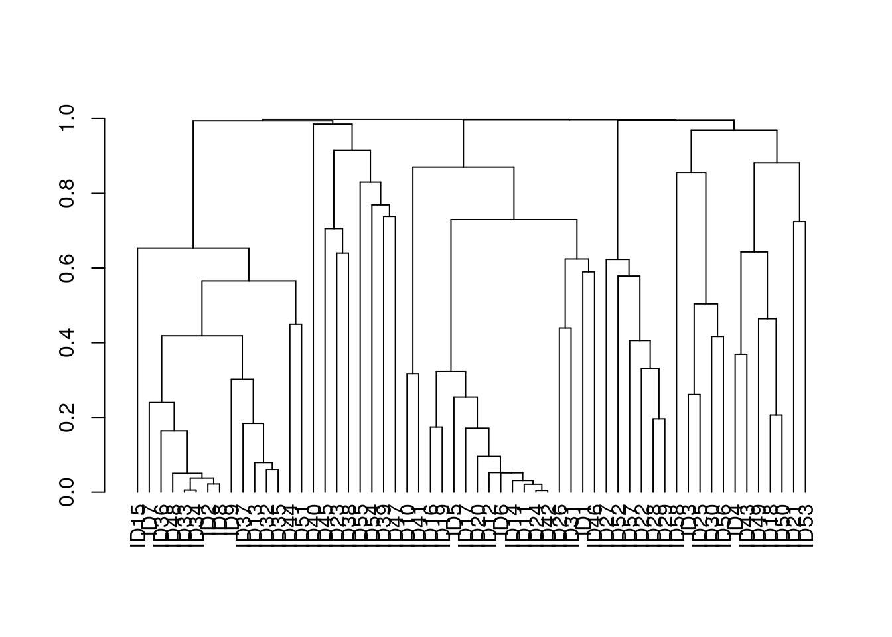 We can use dendrogram to determine the number of clusters. Usually, the tree is splitted where the length of branches are the longest.
However, as we can see from the dendrogram, clusters are no clear. Let’s use an algorithm to solve the best number of clusters.
if( !require(NbClust) ){
install.packages("NbClust")
library(NbClust)
}
# Determine the optimal number of clusters
res <- NbClust(diss = diss, distance = NULL, method = "ward.D2",
index = "silhouette")##
## Only frey, mcclain, cindex, sihouette and dunn can be computed. To compute the other indices, data matrix is neededres$Best.nc## Number_clusters Value_Index
## 15.0000 0.4543Based on the result, let’s divide observations into 15 clusters.
if( !require(dendextend) ){
install.packages("dendextend")
library(dendextend)
}
# Find clusters
cutree(hc, k = 15) ## ID1 ID2 ID3 ID4 ID5 ID6 ID7 ID8 ID9 ID10 ID11 ID12 ID13 ID14 ID15 ID16
## 1 2 3 4 5 5 2 2 2 6 5 5 2 5 2 5
## ID17 ID18 ID19 ID20 ID21 ID22 ID23 ID24 ID25 ID26 ID27 ID28 ID29 ID30 ID31 ID32
## 5 4 5 5 7 8 9 5 3 1 8 8 8 3 1 2
## ID33 ID34 ID35 ID36 ID37 ID38 ID39 ID40 ID41 ID42 ID43 ID44 ID45 ID46 ID47 ID48
## 2 2 2 2 2 9 10 11 6 5 4 2 9 1 12 2
## ID49 ID50 ID51 ID52 ID53 ID54 ID55 ID56 ID57 ID58
## 4 4 2 8 7 13 14 3 8 15# Making colors for 6 clusters
col_val_map <- randomcoloR::distinctColorPalette(15) %>%
as.list() %>% setNames(paste0("clust_",seq(15)))
dend <- color_branches(dendro, k=15, col=unlist(col_val_map))
labels(dend) <- NULL
plot(dend)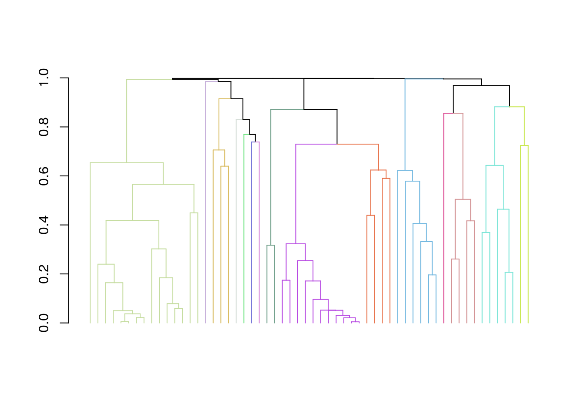
10.2 K-means clustering
Because, we were not able to find clusters with hierarchical clustering, let’s try k-means clustering. In k-means clustering, observations are divided into clusters so that the mean distances between observations and cluster centers are minimized; an observation belongs to cluster whose center is the nearest.
The algorithm starts by dividing observation to random clusters whose number is defined by user. The centroids of clusters are then calculated. After that, observations’ allocation to clusters are updated so that the means are minimized. Again, centroid are calculated, and algorithm continues iteratively until the assignments do not change.
The number of clusters can be determined based on algorithm. Here we utilize silhouette analysis.
if( !require(factoextra) ){
install.packages("factoextra")
library(factoextra)
}
# Convert dist object into matrix
diss <- as.matrix(diss)
# Perform silhouette analysis and plot the result
fviz_nbclust(diss, kmeans, method = "silhouette")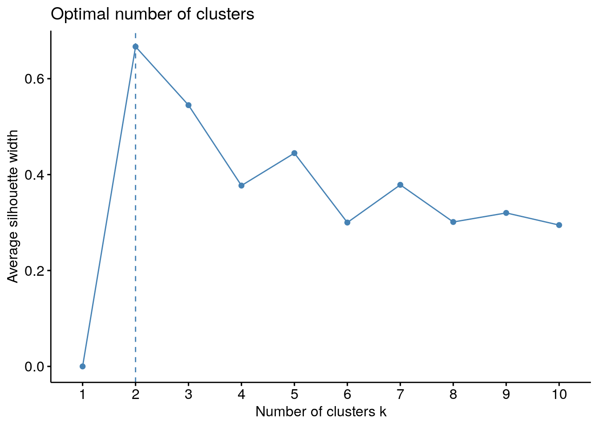
Based on the result of silhouette analysis, we choose 3 to be the number of clusters in k-means clustering.
library(scater)
# The first step is random, add seed for reproducibility
set.seed(15463)
# Perform k-means clustering with 3 clusters
km <- kmeans(diss, 3, nstart = 25)
# Add the result to colData
colData(tse)$clusters <- as.factor(km$cluster)
# Perform PCoA so that we can visualize clusters
tse <- runMDS(tse, exprs_values = "relabundance", FUN = vegan::vegdist, method = "bray")
# Plot PCoA and color clusters
plotReducedDim(tse, "MDS", colour_by = "clusters")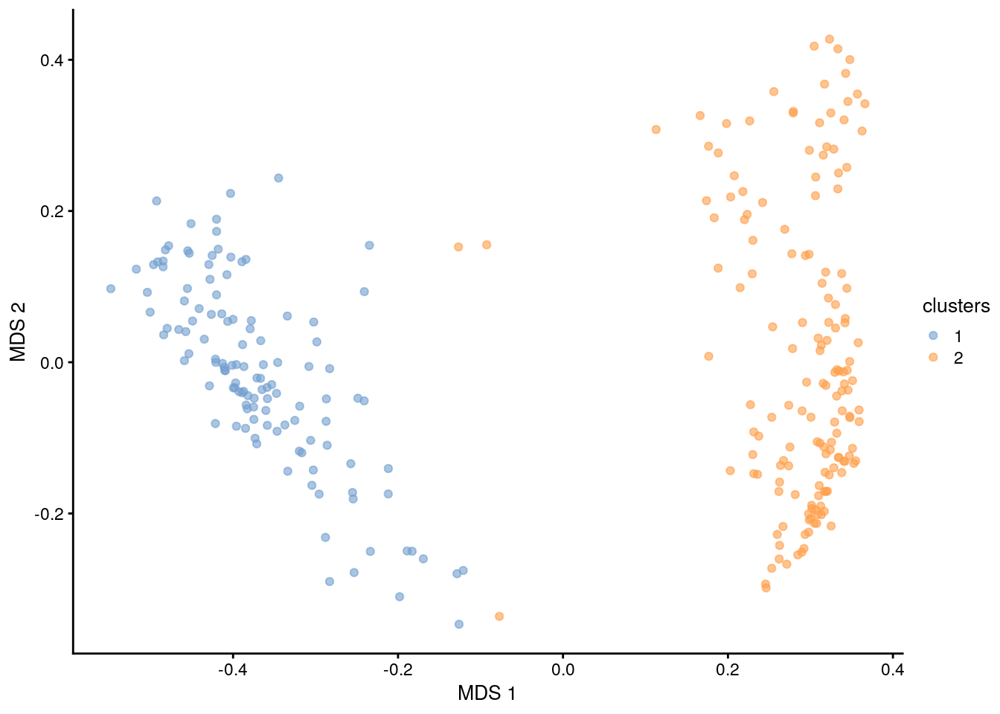
10.3 Dirichlet Multinomial Mixtures (DMM)
This section focus on DMM analysis.
One technique that allows to search for groups of samples that are similar to each other is the Dirichlet-Multinomial Mixture Model. In DMM, we first determine the number of clusters (k) that best fit the data (model evidence) using Laplace approximation. After fitting the model with k clusters, we obtain for each sample k probabilities that reflect the probability that a sample belongs to the given cluster.
Let’s cluster the data with DMM clustering.
# Runs model and calculates the most likely number of clusters from 1 to 7.
# Since this is a large dataset it takes long computational time.
# For this reason we use only a subset of the data; agglomerated by Phylum as a rank.
tse <- GlobalPatterns
tse <- agglomerateByRank(tse, rank = "Phylum", agglomerateTree=TRUE)tse_dmn <- mia::runDMN(tse, name = "DMN", k = 1:7)# It is stored in metadata
tse_dmn## class: TreeSummarizedExperiment
## dim: 67 26
## metadata(2): agglomerated_by_rank DMN
## assays(1): counts
## rownames(67): Phylum:Crenarchaeota Phylum:Euryarchaeota ...
## Phylum:Synergistetes Phylum:SR1
## rowData names(7): Kingdom Phylum ... Genus Species
## colnames(26): CL3 CC1 ... Even2 Even3
## colData names(7): X.SampleID Primer ... SampleType Description
## reducedDimNames(0):
## mainExpName: NULL
## altExpNames(0):
## rowLinks: a LinkDataFrame (67 rows)
## rowTree: 1 phylo tree(s) (66 leaves)
## colLinks: NULL
## colTree: NULLReturn information on metadata that the object contains.
names(metadata(tse_dmn))## [1] "agglomerated_by_rank" "DMN"This returns a list of DMN objects for a closer investigation.
getDMN(tse_dmn)## [[1]]
## class: DMN
## k: 1
## samples x taxa: 26 x 67
## Laplace: 7715 BIC: 7802 AIC: 7760
##
## [[2]]
## class: DMN
## k: 2
## samples x taxa: 26 x 67
## Laplace: 7673 BIC: 7927 AIC: 7842
##
## [[3]]
## class: DMN
## k: 3
## samples x taxa: 26 x 67
## Laplace: 7690 BIC: 8076 AIC: 7948
##
## [[4]]
## class: DMN
## k: 4
## samples x taxa: 26 x 67
## Laplace: 7752 BIC: 8274 AIC: 8103
##
## [[5]]
## class: DMN
## k: 5
## samples x taxa: 26 x 67
## Laplace: 7854 BIC: 8553 AIC: 8340
##
## [[6]]
## class: DMN
## k: 6
## samples x taxa: 26 x 67
## Laplace: 7926 BIC: 8796 AIC: 8540
##
## [[7]]
## class: DMN
## k: 7
## samples x taxa: 26 x 67
## Laplace: 8003 BIC: 9051 AIC: 8752Show Laplace approximation (model evidence) for each model of the k models.
library(miaViz)
plotDMNFit(tse_dmn, type = "laplace")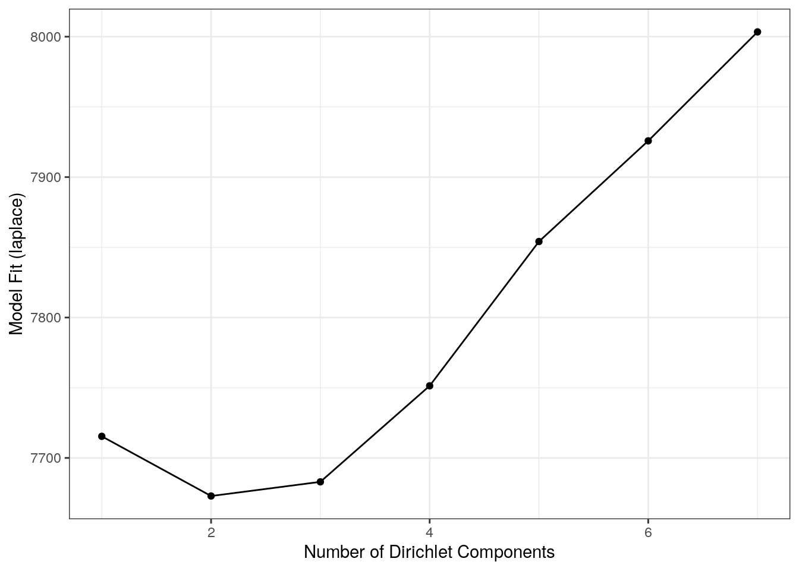
Return the model that has the best fit.
getBestDMNFit(tse_dmn, type = "laplace")## class: DMN
## k: 2
## samples x taxa: 26 x 67
## Laplace: 7673 BIC: 7927 AIC: 784210.3.1 PCoA for ASV-level data with Bray-Curtis; with DMM clusters shown with colors
Group samples and return DMNGroup object that contains a summary. Patient status is used for grouping.
dmn_group <- calculateDMNgroup(tse_dmn, variable = "SampleType", exprs_values = "counts",
k = 2, seed=.Machine$integer.max)
dmn_group## class: DMNGroup
## summary:
## k samples taxa NLE LogDet Laplace BIC AIC
## Feces 2 4 67 1078.3 -106.22 901.1 1171.9 1213
## Freshwater 2 2 67 889.6 -97.21 716.9 936.4 1025
## Freshwater (creek) 2 3 67 1600.3 860.38 1906.4 1674.5 1735
## Mock 2 3 67 980.2 110.61 911.4 1054.4 1115
## Ocean 2 3 67 1096.7 -56.93 944.2 1170.9 1232
## Sediment (estuary) 2 3 67 1195.5 18.63 1080.8 1269.7 1331
## Skin 2 3 67 992.6 -84.93 826.1 1066.8 1128
## Soil 2 3 67 1380.3 11.20 1261.8 1454.5 1515
## Tongue 2 2 67 783.0 -107.77 605.1 829.8 918Mixture weights (rough measure of the cluster size).
DirichletMultinomial::mixturewt(getBestDMNFit(tse_dmn))## pi theta
## 1 0.5385 20.60
## 2 0.4615 15.32Samples-cluster assignment probabilities / how probable it is that sample belongs to each cluster
head(DirichletMultinomial::mixture(getBestDMNFit(tse_dmn)))## [,1] [,2]
## CL3 1.000e+00 4.562e-17
## CC1 1.000e+00 3.449e-22
## SV1 1.000e+00 1.794e-12
## M31Fcsw 6.909e-26 1.000e+00
## M11Fcsw 1.028e-16 1.000e+00
## M31Plmr 1.024e-13 1.000e+00Contribution of each taxa to each component
head(DirichletMultinomial::fitted(getBestDMNFit(tse_dmn)))## [,1] [,2]
## Phylum:Crenarchaeota 0.3043 0.1354082
## Phylum:Euryarchaeota 0.2314 0.1468945
## Phylum:Actinobacteria 1.2107 1.0581104
## Phylum:Spirochaetes 0.2141 0.1318102
## Phylum:MVP-15 0.0299 0.0007698
## Phylum:Proteobacteria 6.8408 1.8113562Get the assignment probabilities
prob <- DirichletMultinomial::mixture(getBestDMNFit(tse_dmn))
# Add column names
colnames(prob) <- c("comp1", "comp2")
# For each row, finds column that has the highest value. Then extract the column
# names of highest values.
vec <- colnames(prob)[max.col(prob,ties.method = "first")]Computing the euclidean PCoA and storing it as a data frame
# Does clr transformation. Pseudocount is added, because data contains zeros.
tse <- transformCounts(tse, method = "relabundance", pseudocount = 1)
tse <- transformCounts(tse, "relabundance", method = "clr")
library(scater)
# Does principal coordinate analysis
df <- calculateMDS(tse, exprs_values = "clr", method = "euclidean")
# Creates a data frame from principal coordinates
euclidean_pcoa_df <- data.frame(pcoa1 = df[,1],
pcoa2 = df[,2])# Creates a data frame that contains principal coordinates and DMM information
euclidean_dmm_pcoa_df <- cbind(euclidean_pcoa_df,
dmm_component = vec)
# Creates a plot
euclidean_dmm_plot <- ggplot(data = euclidean_dmm_pcoa_df,
aes(x=pcoa1, y=pcoa2,
color = dmm_component)) +
geom_point() +
labs(x = "Coordinate 1",
y = "Coordinate 2",
title = "PCoA with Aitchison distances") +
theme(title = element_text(size = 12)) # makes titles smaller
euclidean_dmm_plot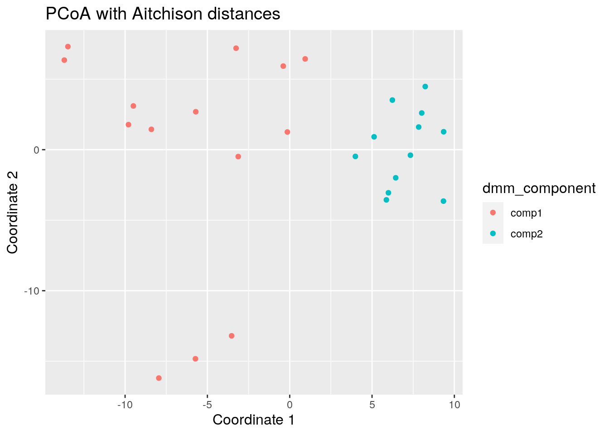
10.4 Community Detection
Another approach for discovering communities within the samples of the data, is to run community detection algorithms after building a graph. The following demonstration builds a graph based on the k nearest-neighbors and performs the community detection on the fly.
bluster (Lun 2021) package offers several clustering methods,
among which graph-based are present, enabling the community detection
task.
Installing package:
if(!require(bluster)){
BiocManager::install("bluster")
}The algorithm used is “short random walks” (Pons and Latapy 2006). Graph is
constructed using different k values (the number of nearest neighbors
to consider during graph construction) using the robust centered log
ratio (rclr) assay data. Then plotting the communities using UMAP
(McInnes, Healy, and Melville 2018) ordination as a visual exploration aid. In the
following demonstration we use the enterotype dataset from the
(Ernst, Shetty, and Lahti 2020) package.
library(bluster)
library(patchwork) # For arranging several plots as a grid
library(scater)
data("enterotype", package="mia")
tse <- enterotype
tse <- transformCounts(tse, method = "rclr")
# Performing and storing UMAP
tse <- runUMAP(tse, name="UMAP", exprs_values="rclr")
k <- c(2,3,5,10)
ClustAndPlot <- function(x) {
# Creating the graph and running the short random walks algorithm
graph_clusters <- clusterRows(t(assays(tse)$rclr), NNGraphParam(k=x))
# Results of the clustering as a color for each sample
plotUMAP(tse, colour_by = I(graph_clusters)) +
labs(title = paste0("k = ", x))
}
# Applying the function for different k values
plots <- lapply(k,ClustAndPlot)
# Displaying plots in a grid
(plots[[1]] + plots[[2]]) / (plots[[3]] + plots[[4]])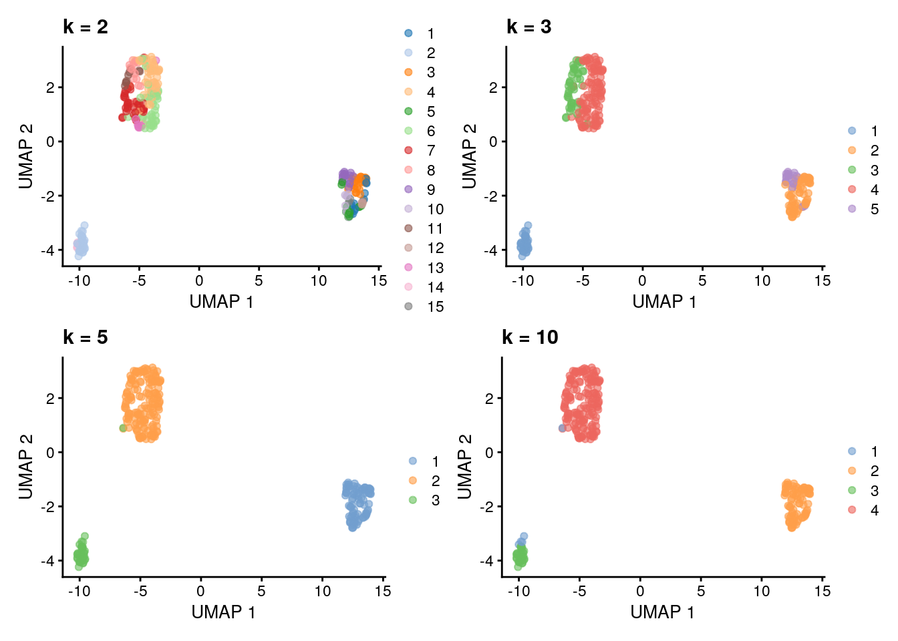
Similarly, the bluster (Lun 2021) package offers clustering
diagnostics that can be used for judging the clustering quality (see
Assorted clustering
diagnostics).
In the following, Silhouette width as a diagnostic tool is computed
and results are visualized for each case presented earlier. For more
about Silhouettes read (Rousseeuw 1987).
ClustDiagPlot <- function(x) {
# Getting the clustering results
graph_clusters <- clusterRows(t(assays(tse)$rclr), NNGraphParam(k=x))
# Computing the diagnostic info
sil <- approxSilhouette(t(assays(tse)$rclr), graph_clusters)
# Plotting as a boxlpot to observe cluster separation
boxplot(split(sil$width, graph_clusters), main=paste0("k = ", x))
}
# Applying the function for different k values
res <- lapply(k,ClustDiagPlot) 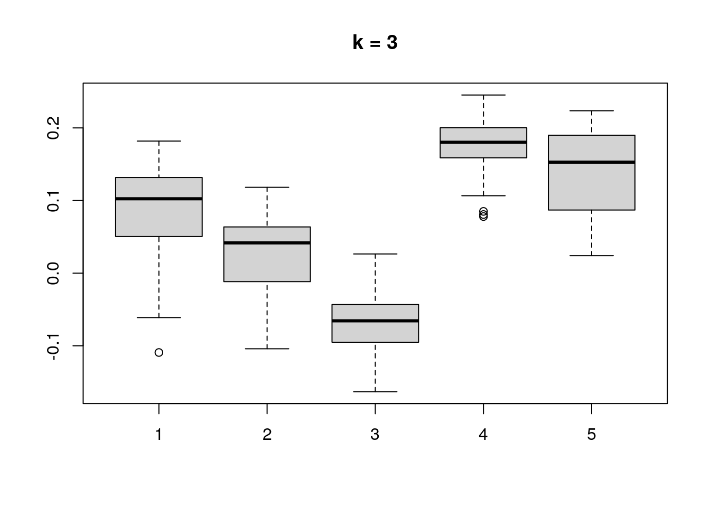
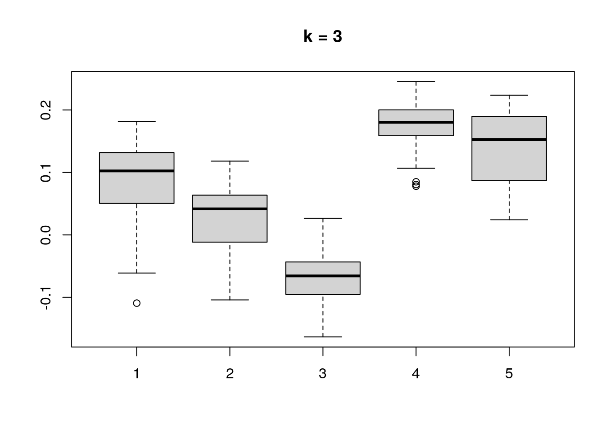

10.5 Biclustering
Biclustering methods cluster rows and columns simultaneously in order to find subsets of correlated features/samples.
Here, we use following packages:
cobiclust is especially developed for microbiome data whereas biclust is more general method. In this section, we show three different cases and example solutions to apply biclustering to them.
- Taxa vs samples
- Taxa vs biomolecule/biomarker
- Taxa vs taxa
Biclusters can be visualized using heatmap or boxplot, for instance. For checking purposes, also scatter plot might be valid choice.
Check more ideas for heatmaps from chapters 14 and @ref(microbiome-community.
10.5.1 Taxa vs samples
When you have microbial abundance matrices, we suggest to use cobiclust which is designed for microbial data.
Load example data
library(mia)
data("HintikkaXOData")
mae <- HintikkaXODataOnly the most prevalent taxa are included in analysis.
# Subset data in the first experiment
mae[[1]] <- subsetByPrevalentTaxa(mae[[1]], rank = "Genus", prevalence = 0.2, detection = 0.001)
# clr-transform in the first experiment
mae[[1]] <- transformSamples(mae[[1]], method = "relabundance", pseudocount = 1)
mae[[1]] <- transformSamples(mae[[1]], "relabundance", method = "clr")cobiclust takes counts table as an input and gives cobiclust object as an output. It includes clusters for taxa and samples.
if(!require(cobiclust)){
install.packages("cobiclust")
library(cobiclust)
}
# Do clustering; use counts table´
clusters <- cobiclust(assay(mae[[1]], "counts"))
# Get clusters
row_clusters <- clusters$classification$rowclass
col_clusters <- clusters$classification$colclass
# Add clusters to rowdata and coldata
rowData(mae[[1]])$clusters <- factor(row_clusters)
colData(mae[[1]])$clusters <- factor(col_clusters)
# Order data based on clusters
mae[[1]] <- mae[[1]][order(rowData(mae[[1]])$clusters), order(colData(mae[[1]])$clusters)]
# Print clusters
clusters$classification## $rowclass
## [1] 1 1 1 1 2 2 1 1 1 1 1 1 2 2 2 2 1 2 1 1 2 1 2 2 1 1 2 1 1 1 1 1 2 1 1 2 1 1
## [39] 1 1 1 1 1 1 1 1 1 2 1 2 1 1 1 2 1 1 1
##
## $colclass
## C1 C2 C3 C4 C5 C6 C7 C8 C9 C10 C11 C12 C13 C14 C15 C16 C17 C18 C19 C20
## 1 2 2 2 2 2 2 2 2 2 2 2 2 2 2 2 2 2 2 2
## C21 C22 C23 C24 C25 C26 C27 C28 C29 C30 C31 C32 C33 C34 C35 C36 C37 C38 C39 C40
## 2 3 3 3 3 3 3 3 3 3 3 3 3 3 3 3 3 3 3 1Next we can plot clusters. Commonly used plot is heatmap with annotations.
if(!require(pheatmap)){
install.packages("pheatmap")
library(pheatmap)
}
# z-transform for heatmap
mae[[1]] <- transformFeatures(mae[[1]], assay_name = "clr", method = "z", name = "clr_z")
# Create annotations. When column names are equal, they should share levels.
# Here samples include 3 clusters, and taxa 2. That is why we have to make
# column names unique.
annotation_col <- data.frame(colData(mae[[1]])[, "clusters", drop = F])
colnames(annotation_col) <- "col_clusters"
annotation_row <- data.frame(rowData(mae[[1]])[, "clusters", drop = F])
colnames(annotation_row) <- "row_clusters"
# Create a heatmap
pheatmap(assay(mae[[1]], "clr_z"), cluster_rows = F, cluster_cols = F,
annotation_col = annotation_col,
annotation_row = annotation_row)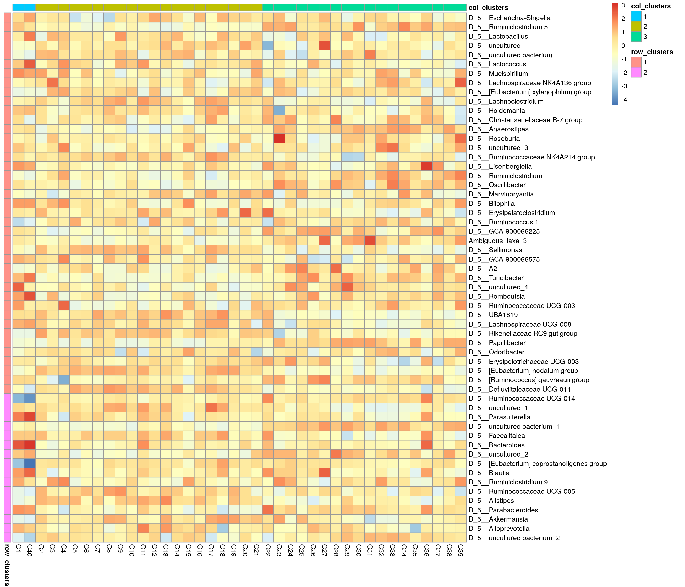
Boxplot is commonly used to summarize the results:
if(!require(ggplot2)){
install.packages("ggplot2")
library(ggplot2)
}
if(!require(patchwork)){
install.packages("patchwork")
library(patchwork)
}
# ggplot requires data in melted format
melt_assay <- meltAssay(mae[[1]], assay_name = "clr", add_col_data = T, add_row_data = T)
# patchwork two plots side-by-side
p1 <- ggplot(melt_assay) +
geom_boxplot(aes(x = clusters.x, y = clr)) +
labs(x = "Taxa clusters")
p2 <- ggplot(melt_assay) +
geom_boxplot(aes(x = clusters.y, y = clr)) +
labs(x = "Sample clusters")
p1 + p2
10.5.2 Taxa vs biomolecules
Here, we analyze cross-correlation between taxa and metabolites. This is a case, where we use biclust method which is suitable for numeric matrices in general.
# Samples must be in equal order
# (Only 1st experiment was ordered in cobiclust step leading to unequal order)
mae[[1]] <- mae[[1]][ , colnames(mae[[2]]) ]
# Make rownames unique since it is require by other steps
rownames(mae[[1]]) <- make.unique(rownames(mae[[1]]))
# Calculate correlations
corr <- getExperimentCrossCorrelation(mae, 1, 2,
assay_name1 = "clr",
assay_name2 = "nmr",
mode = "matrix",
cor_threshold = 0.2)biclust takes matrix as an input and returns biclust object.
# Load package
if(!require(biclust)){
install.packages("biclust")
library(biclust)
}
# Set seed for reproducibility
set.seed(3973)
# Find biclusters
bc <- biclust(corr, method=BCPlaid(), fit.model = y ~ m,
background = TRUE, shuffle = 100, back.fit = 0, max.layers = 10,
iter.startup = 10, iter.layer = 100, verbose = FALSE)
bc##
## An object of class Biclust
##
## call:
## biclust(x = corr, method = BCPlaid(), fit.model = y ~ m, background = TRUE,
## shuffle = 100, back.fit = 0, max.layers = 10, iter.startup = 10,
## iter.layer = 100, verbose = FALSE)
##
## There was no cluster foundThe object includes cluster information. However compared to cobiclust, biclust object includes only information about clusters that were found, not general cluster.
Meaning that if one cluster size of 5 features was found out of 20 features, those 15 features do not belong to any cluster. That is why we have to create an additional cluster for features/samples that are not assigned into any cluster.
# Functions for obtaining biclust information
# Get clusters for rows and columns
.get_biclusters_from_biclust <- function(bc, assay){
# Get cluster information for columns and rows
bc_columns <- t(bc@NumberxCol)
bc_columns <- data.frame(bc_columns)
bc_rows <- bc@RowxNumber
bc_rows <- data.frame(bc_rows)
# Get data into right format
bc_columns <- .manipulate_bc_data(bc_columns, assay, "col")
bc_rows <- .manipulate_bc_data(bc_rows, assay, "row")
return(list(bc_columns = bc_columns, bc_rows = bc_rows))
}
# Input clusters, and how many observations there should be, i.e., the number of samples or features
.manipulate_bc_data <- function(bc_clusters, assay, row_col){
# Get right dimension
dim <- ifelse(row_col == "col", ncol(assay), nrow(assay))
# Get column/row names
if( row_col == "col" ){
names <- colnames(assay)
} else{
names <- rownames(assay)
}
# If no clusters were found, create one. Otherwise create additional cluster which
# contain those samples that are not included in clusters that were found.
if( nrow(bc_clusters) != dim ){
bc_clusters <- data.frame(cluster = rep(TRUE, dim))
} else {
# Create additional cluster that includes those samples/features that
# are not included in other clusters.
vec <- ifelse(rowSums(bc_clusters) > 0, FALSE, TRUE)
# If additional cluster contains samples, then add it
if ( any(vec) ){
bc_clusters <- cbind(bc_clusters, vec)
}
}
# Adjust row and column names
rownames(bc_clusters) <- names
colnames(bc_clusters) <- paste0("cluster_", 1:ncol(bc_clusters))
return(bc_clusters)
}# Get biclusters
bcs <- .get_biclusters_from_biclust(bc, corr)
bicluster_rows <- bcs$bc_rows
bicluster_columns <- bcs$bc_columns
# Print biclusters for rows
head(bicluster_rows)## cluster_1
## D_5__Ruminiclostridium 5 TRUE
## D_5__uncultured TRUE
## D_5__Lactococcus TRUE
## D_5__Lachnoclostridium TRUE
## D_5__Holdemania TRUE
## D_5__Anaerostipes TRUELet’s collect information for the scatter plot.
# Function for obtaining sample-wise sum, mean, median, and mean variance for each cluster
.sum_mean_median_var <- function(tse1, tse2, assay_name1, assay_name2, clusters1, clusters2){
list <- list()
# Create a data frame that includes all the information
for(i in 1:ncol(clusters1) ){
# Subset data based on cluster
tse_subset1 <- tse1[clusters1[,i], ]
tse_subset2 <- tse2[clusters2[,i], ]
# Get assay
assay1 <- assay(tse_subset1, assay_name1)
assay2 <- assay(tse_subset2, assay_name2)
# Calculate sum, mean, median, and mean variance
sum1 <- colSums2(assay1, na.rm = T)
mean1 <- colMeans2(assay1, na.rm = T)
median1 <- colMedians(assay1, na.rm = T)
var1 <- colVars(assay1, na.rm = T)
sum2 <- colSums2(assay2, na.rm = T)
mean2 <- colMeans2(assay2, na.rm = T)
median2 <- colMedians(assay2, na.rm = T)
var2 <- colVars(assay2, na.rm = T)
list[[i]] <- data.frame(sample = colnames(tse1), sum1, sum2, mean1, mean2,
median1, median2, var1, var2)
}
return(list)
}
# Calculate info
df <- .sum_mean_median_var(mae[[1]], mae[[2]], "clr", "nmr", bicluster_rows, bicluster_columns)Now we can create a scatter plot. X-axis includes median clr abundance of microbiome and y-axis median absolute concentration of each metabolite. Each data point represents a single sample.
From the plots, we can see that there is low negative correlation in both cluster 1 and 3. This means that when abundance of bacteria belonging to cluster 1 or 3 is higher, the concentration of metabolites of cluster 1 or 3 is lower, and vice versa.
pics <- list()
for(i in seq_along(df)){
pics[[i]] <- ggplot(df[[i]]) +
geom_point(aes(x = median1, y = median2)) +
labs(title = paste0("Cluster ", i),
x = "Taxa (clr median)",
y = "Metabolites (abs. median)")
print(pics[[i]])
}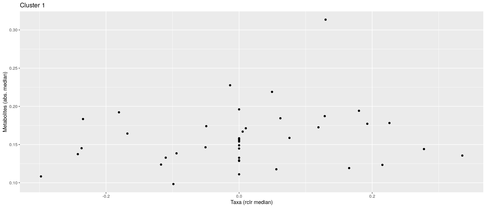
# pics[[1]] + pics[[2]] + pics[[3]]pheatmap does not allow boolean values, so they must be converted into factors.
bicluster_columns <- data.frame(apply(bicluster_columns, 2, as.factor))
bicluster_rows <- data.frame(apply(bicluster_rows, 2, as.factor))Again, we can plot clusters with heatmap.
# Adjust colors for all clusters
if( ncol(bicluster_rows) > ncol(bicluster_columns) ){
cluster_names <- colnames(bicluster_rows)
} else {
cluster_names <- colnames(bicluster_columns)
}
annotation_colors <- list()
for(name in cluster_names){
annotation_colors[[name]] <- c("TRUE" = "red", "FALSE" = "white")
}
# Create a heatmap
pheatmap(corr, cluster_cols = F, cluster_rows = F,
annotation_col = bicluster_columns,
annotation_row = bicluster_rows,
annotation_colors = annotation_colors)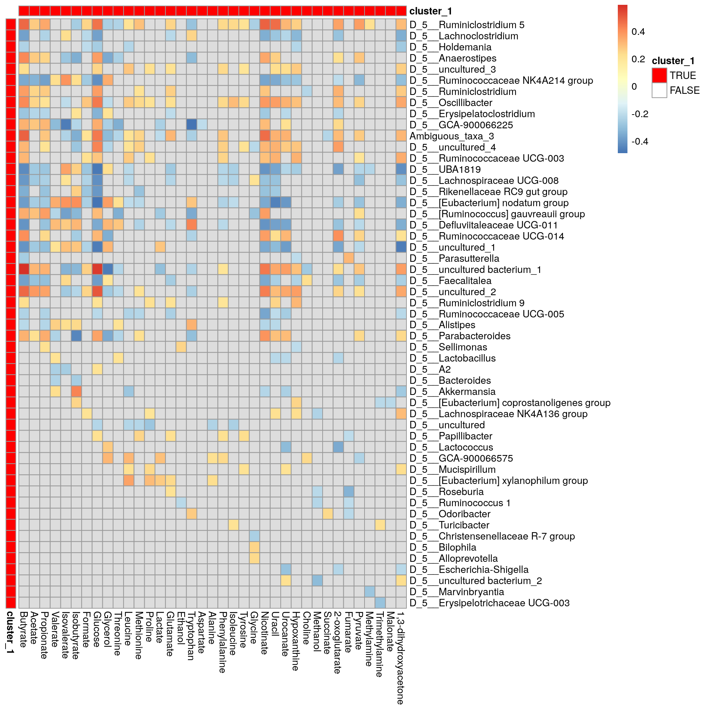
10.5.3 Taxa vs taxa
Third and final example deals with situation where we want to analyze correlation between taxa. biclust is suitable for this.
# Calculate cross-correlation
corr <- getExperimentCrossCorrelation(mae, 1, 1,
assay_name1 = "clr", assay_name2 = "clr",
mode = "matrix",
cor_threshold = 0.2, verbose = F, show_warning = F)
# Find biclusters
bc <- biclust(corr, method=BCPlaid(), fit.model = y ~ m,
background = TRUE, shuffle = 100, back.fit = 0, max.layers = 10,
iter.startup = 10, iter.layer = 100, verbose = FALSE)# Get biclusters
bcs <- .get_biclusters_from_biclust(bc, corr)
bicluster_rows <- bcs$bc_rows
bicluster_columns <- bcs$bc_columns# Create a column that combines information
# If row/column includes in multiple clusters, cluster numbers are separated with "_&_"
bicluster_columns$clusters <- apply(bicluster_columns, 1,
function(x){paste(paste(which(x)), collapse = "_&_") })
bicluster_columns <- bicluster_columns[, "clusters", drop = FALSE]
bicluster_rows$clusters <- apply(bicluster_rows, 1,
function(x){paste(paste(which(x)), collapse = "_&_") })
bicluster_rows <- bicluster_rows[, "clusters", drop = FALSE]# Convert boolean values into factor
bicluster_columns <- data.frame(apply(bicluster_columns, 2, as.factor))
bicluster_rows <- data.frame(apply(bicluster_rows, 2, as.factor))
pheatmap(corr, cluster_cols = F, cluster_rows = F,
annotation_col = bicluster_columns,
annotation_row = bicluster_rows)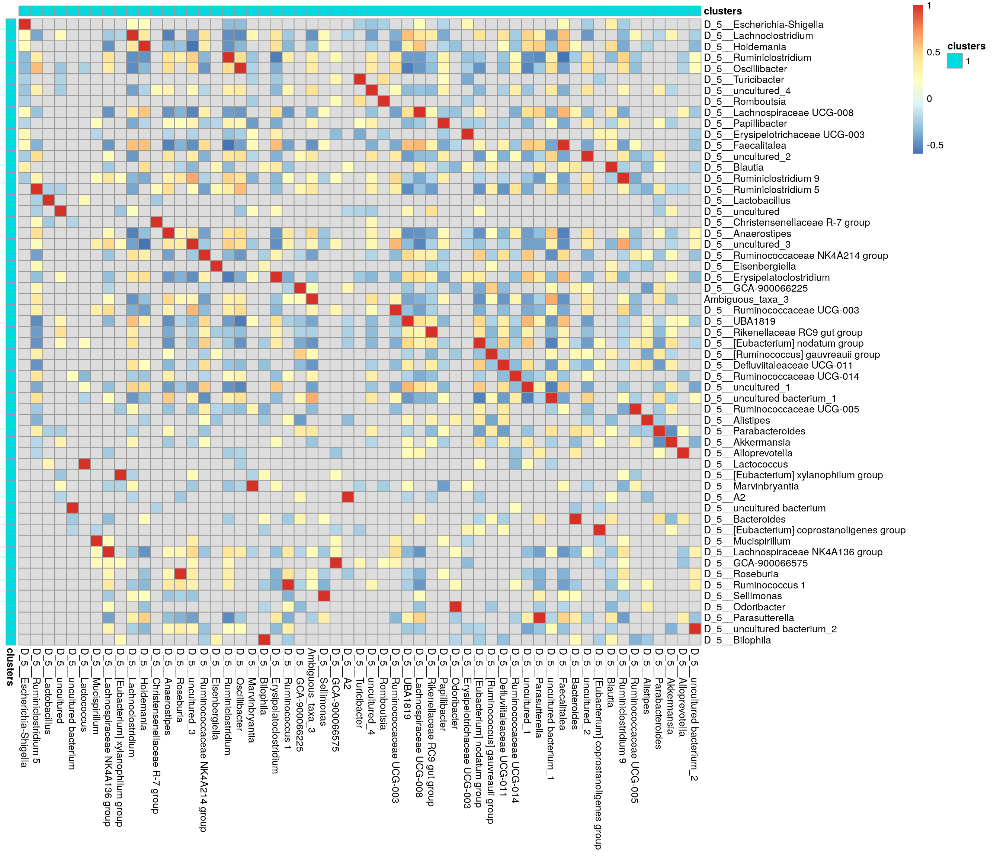